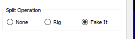

Krish is trying to align with laws in the country he’s in and those he expects to call since not all allocations are equal_______________________________________________I learned to do split this way while working JA on 160 a few years ago (because they were not allowed on 1840 at that time). The only hard part, turn split back on in the software (DOH!).WSJT-X split to NONESet VFO A to where you need to hear, (3578, ABOVE the usual spot)Go to splitSet VFO B to where you want to talk (3547), pick a tone and attack.Make and log the contact, unset the changes.One last comment on this topic:WSJT-X shifts the VFO to keep the actual tone within the 1500-2000 Hz window to lower the chances of transmitted harmonics (cleaner signals). Turning WSJT-X to none, defeats this function. (MSHV does not do this at all.)I know with Elecraft, (not starting a brand war) the tone won’t have harmonics above 3000 Hz (their filter chops it and their code watches for that). But I also know that with other brands, this may not be the case (as seen in real life). (Flex is clean too.)SO, if you opt for none (as we must for this odd split), at least be aware of the problem potential or stay within the 1500-2000 Hz tone range where the 2nd and 3rd audio harmonics are filtered out. Your band mates, appreciate that.And yes, of course add (because you’re in USB) the tone frequency to the TX VFO frequency to know the precise place in the spectrum you’re sending (as usual) which should help you stay within the correct sub-band (the CW zone for example).i.e. tone 1350 transmitting on 3.547 just add them together (pay attention to the decimal point hi hi). [3.548.350 MHz.]Merry Christmas es 73,Rick nk7i73,From: Mike Flowers via Chat <chat@ncdxc.org>
Date: December 20, 2023 at 10:15:10 PM PST
To: Al N6TA <al.n6ta@gmail.com>, Steve Jones <n6sj@earthlink.net>
Cc: NCDXC Discussion List <chat@ncdxc.org>
Subject: [NCDXC Chat] Working VU4N on 80 meters FT8
Reply-To: Mike Flowers <mike.flowers@gmail.com>_______________________________________________Taking Rick, NK7I’s sage advice, I have also been experimenting with this to achieve true split operation using WSJT-X.
I have been able to achieve this with my K3 using the following procedure. I will use RX on 3573kHz and TX on 3547kHz as examples.
- I set WSJT-X to 80M FT8, so that RX frequency is set to 3573, VFO A.
- I ensure that my K3 is not in split mode.
- In WSJT-X File > Settings > Radio > Split Operation where I normally have ‘Fake It’ selected, I now select ‘None’ and click OK.
- At this point, WSJT-X is happy, the CAT dot is green and 3.573 appears in the frequency box.
- Then on my K3 I double tap the A>B button and hold it to put the K3 into Split mode.
- An ‘S’ appears in the green CAT dot on WSJT-X, indicating that Split is active.
- I set VFO B to 3547.
- When I transmit, I am transmitting on 3547, at the relative position of the bandpass at 3547, and 3547 appears in the WSJT-X frequency display box.
- As soon as transmitting is completed, the WSJT-X frequency display box returns to 3573.
Now WSJT-X is running in Split mode as we are used to it. It transmits on VFO B and receives on VFO A.
My analysis is that by selecting ‘None’ for WSJT-X Split Operation, we are disabling the audio split function within WSJT-X that it uses to keep transmissions in the RX bandpass, but importantly not in the K3.
WSJT-X wants to restrict its internal audio frequency ‘split’ to its RX bandpass, and both ‘Rig’ and ‘Fake It’ allow this audio split to remain active. Selecting ‘None’ deactivates the WSJT-X audio split and allows my K3’s split function to operate.
I’m confident that this method will work with other rigs. Step #5 above for the K3 must have an equivalent with all modern transceivers.
I will be ready to try working WSJT-X in my attempts to work VU4N on 80M!!
And I will try to remember to set WSJT-X back to ‘Fake It’ afterwards.
- 73 and good DX de Mike, K6MKF, NCDXC Life Member
From: Chat <chat-bounces@ncdxc.org> On Behalf Of Al N6TA via Chat
Sent: Wednesday, December 20, 2023 20:52
To: Steve Jones <n6sj@earthlink.net>
Cc: NCDXC Discussion List <chat@ncdxc.org>
Subject: Re: [NCDXC Chat] Working VU4N on 80 meters FT8
I am trying to figure this out but so far, the rig wants to TX at 3572 when I have RX at 3573. WSJT-X is in 'Rig' not Fake It. I turned off Spit on the K4 but when I TX, it goes back to split and 1 kHz below the main VFO. For a while, i thought I was getting the hang of this mode and am back in the corner with the dunce cap on!
How can a rare DX station expect to TX on a non standard frequency and then listen elsewhere. Any clues welcomed.
Al N6TA
On Wed, Dec 20, 2023 at 5:07 PM Steve Jones via Chat <chat@ncdxc.org> wrote:
So how does it work? I might want to try it here!
Steve
From: Paul N6PSE <pauln6pse@gmail.com>
Sent: Wednesday, December 20, 2023 5:03 PM
To: Steve Jones <n6sj@earthlink.net>; NCDXC Discussion List <chat@ncdxc.org>
Subject: Re: [NCDXC Chat] Working VU4N on 80 meters FT8
I was able to resolve the issue thanks to Rick NK7I and Tom KJ7TEA both up in Idaho.
Now I am ready for VU4N and his unusual split.
Paul N6PSE
On Wed, Dec 20, 2023 at 3:23 PM Steve Jones <n6sj@earthlink.net> wrote:
Paul,
Under WSJT-X Settings/Radio I found this:

Maybe if you select “Rig” instead of “Fake It” you’d be able to work VU4N’s split?
73,
Steve
N6SJ
From: Chat <chat-bounces@ncdxc.org> On Behalf Of Paul N6PSE via Chat
Sent: Wednesday, December 20, 2023 1:05 PM
To: NCDXC Discussion List <chat@ncdxc.org>
Cc: w4vku@yahoo.com
Subject: Re: [NCDXC Chat] Working VU4N on 80 meters FT8
I received this reply from Krish VU4N in response my question:
@N6PSE, i just set VFO-A/B to different frequencies.
The 80m and 160m Split is to accommodate stations in JA and DS.
On 160, VU Frequency range is pretty narrow. So trying to stay within everyone's rules.
Btw, the QRN is coming from the LED street lights. I dont' think i can get any results by reporting this
to the Electricity board. Things take months to move here.
What i am planning is to perhaps move the 30/40 vertical to a different spot, near the 20-10m vertical( picks up less QRN, as compared to the Hex), since it will be separated by a larger stretch of land from the LED street light's, as compared to its current location. Perhaps that will make things a bit better. It is worth a try. If this works, then will consider moving the 80/160 too.
On Wed, Dec 20, 2023 at 11:08 AM Paul N6PSE <pauln6pse@gmail.com> wrote:
This morning, VU4N was very workable into W6/W7 at 3.578 FT8.
He was calling CQ CQ over and over and not working anyone.
Later, we learned that he may have been listening for callers at 3.547.
WSJT-X seems to override our rigs when we set up TX at 3.547 and RX at 3.578.
Anyone have an idea on how to do this with WSJT-X?
Thanks,
Paul N6PSE
_______________________________________________
Chat mailing list
Chat@ncdxc.org
http://mail.ncdxc.org/mailman/listinfo/chat_ncdxc.org
Chat mailing list
Chat@ncdxc.org
http://mail.ncdxc.org/mailman/listinfo/chat_ncdxc.org
Chat mailing list
Chat@ncdxc.org
http://mail.ncdxc.org/mailman/listinfo/chat_ncdxc.org